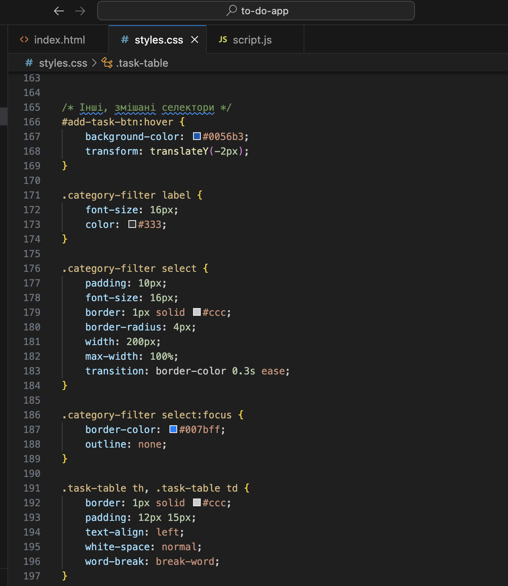

Лабораторна робота №2
Тема, мета
Тема: Вивчення основ CSS і селекторів.
Мета: Навчитись використовувати різні типи селекторів і застосовувати CSS стилі.
Способи підключення стилів
Стилі можуть бути підключені трьома способами: inline-стилі, внутрішні стилі в секції <style>, та зовнішні стилі через <link>.
<!-- Inline стиль -->
<h1 style="color: red;">Заголовок</h1>
<!-- Внутрішній стиль -->
<style>
h1 { color: red; }
</style>
<!-- Зовнішній стиль -->
<link rel="stylesheet" href="styles.css">
Селектори тегу
Приклад використання селекторів тегу в нашому додатку:
<h1>Планувальник задач</h1>
<h2>Таблиця Завдань</h2>
h1, h2 {
color: #333;
margin-bottom: 20px;
}
Селектори класу
Приклад використання селекторів класу в нашому додатку:
<div class="container">
...
</div>
.container {
width: 90%;
max-width: 1200px;
background: #fff;
padding: 20px;
border-radius: 8px;
box-shadow: 0 4px 8px rgba(0,0,0,0.1);
text-align: center;
margin-bottom: 20px;
}
Селектори ідентифікаторів
Приклад використання селекторів ідентифікаторів в нашому додатку:
<input type="text" id="new-task" placeholder="Додати нове завдання">
#new-task {
flex: 1;
padding: 12px 20px;
border: 1px solid #ccc;
border-radius: 4px;
font-size: 16px;
box-shadow: inset 0 2px 4px rgba(0,0,0,0.1);
transition: border-color 0.3s ease;
}
Інші селектори
Приклад використання інших селекторів в нашому додатку:
.task-table td:last-child {
min-width: 40%;
}
.task-table .button-container {
display: flex;
gap: 10px;
}
.adaptive-flex .task-item .task-info span {
flex: 1;
margin-bottom: 5px;
white-space: normal;
word-break: break-word;
}

CSS: Шрифти Текст Таблиці Фон Контур Списки СSS
Приклад використання CSS властивостей:
body {
font-family: Arial, sans-serif;
background-color: #f0f0f0;
}
.container {
background: #fff;
padding: 20px;
border-radius: 8px;
box-shadow: 0 4px 8px rgba(0,0,0,0.1);
}
h1, h2 {
color: #333;
}
.task-table {
width: 100%;
border-collapse: collapse;
margin: 20px auto;
box-shadow: 0 2px 4px rgba(0,0,0,0.1);
}
Висновки до ЛР №2
У цій лабораторній роботі ми навчилися використовувати різні типи селекторів у CSS, а також застосовувати стилі до HTML елементів для покращення вигляду нашого веб-застосунку.